Roniel Gemina
- a currently IT student in NORSU MC1
- graduated in Taclobo National High School (THNS) and Candau-ay Elementary School (CandES)
In Mathematics: Excellent
> Algebra: 98%
> Arithmetic: 95%
> Geometry: 92%
> Logic: 91%
> Calculus (Basics): 90%
> Trigonometry: 89%
> Statistics: 82%
In Music: Excellent
Mastery in ...
... playing guitar: 98%
... singing: 96%
... arranging a song: 94%
... making music: 93%
... composing lyrics: 92%
... playing bass guitar: 90%
... playing drums: 90%
... music theory: 87%
... playing piano: 80%
> Best in Mathematics of Batch 2024-2025 SHS Graduates in TNHS
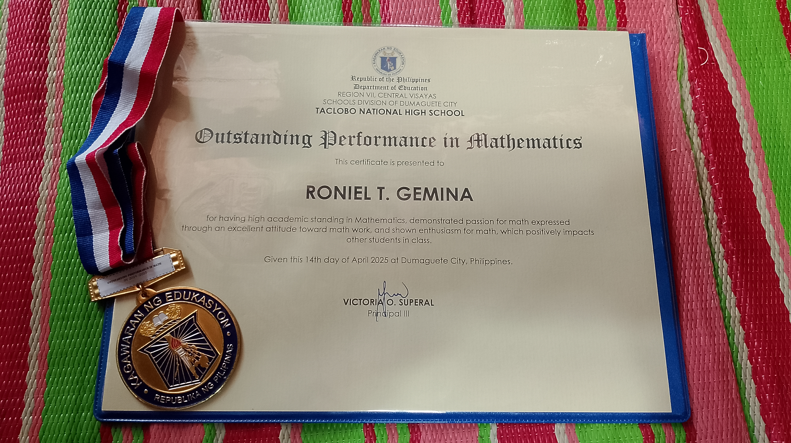> Champion in TNHS Mathematics Quiz Bee 2024
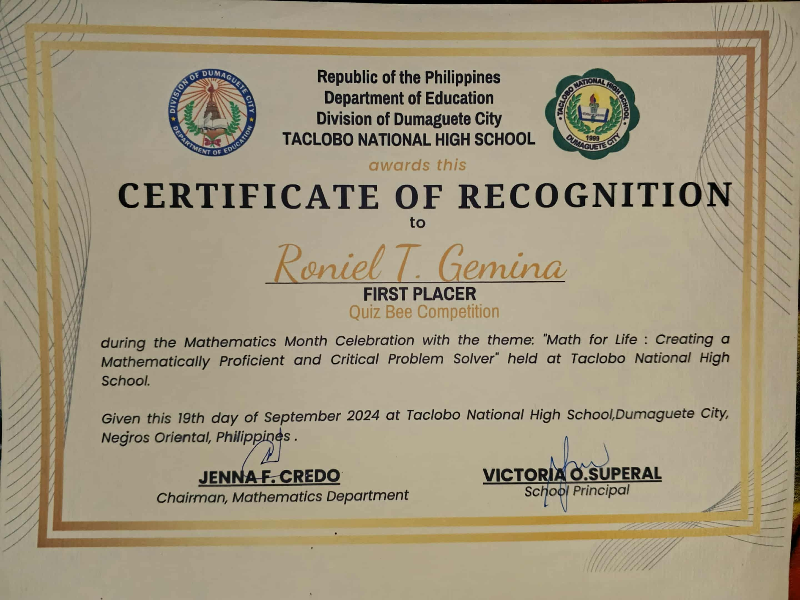> 3rd Place in Solo Category of 7th Divisional Mathematics Investigation in Negros Oriental
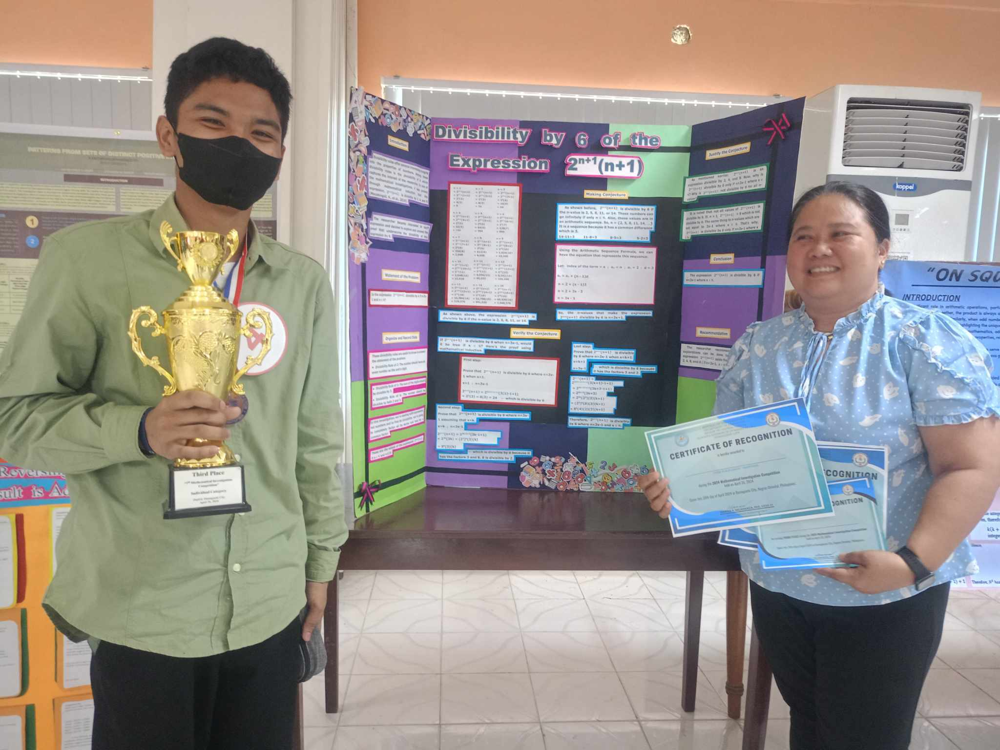> Champion in TNHS Mathematics Quiz Bee 2023
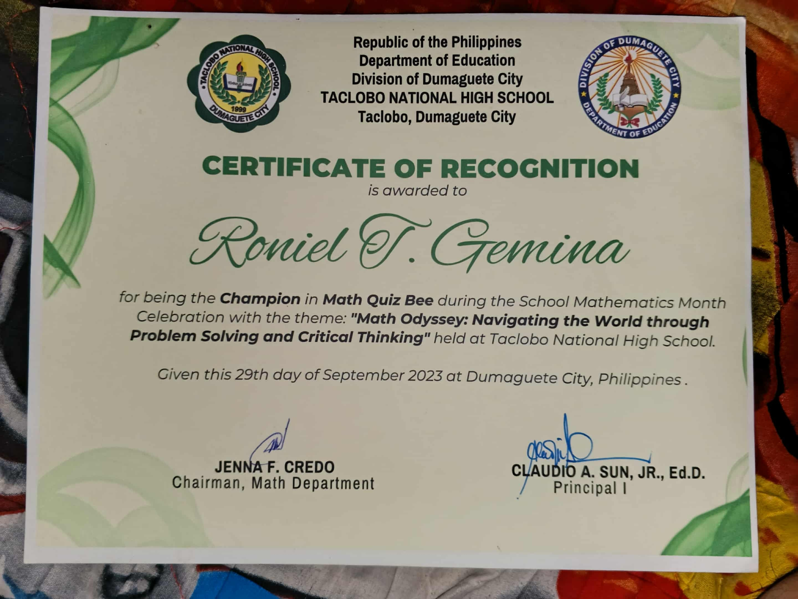> Champion in TNHS Tower of Hanoi Contest 2023
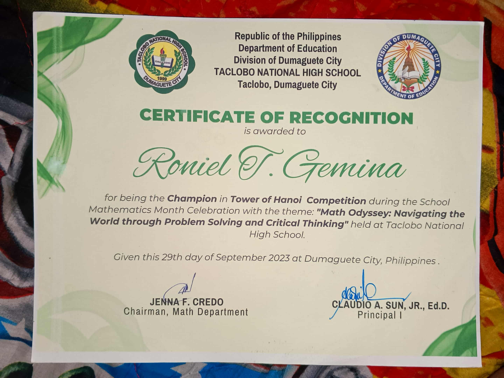> Best in Mathematics of Batch 2022-2023 Junior High Completers in THNS
> 2nd Place Dumaguete North District Tower of Hanoi Contest 2018
> 2nd Place in Ayungon Mathematics Challenge 2017
> 2nd Place in Ayungon Mathematics Challenge 2015
> Champion (1st Place) in 2024 Grade-Level Nutrition Month Jingle Making Contest
> Best in Music Batch 2024-2025 SHS Graduates in TNHS
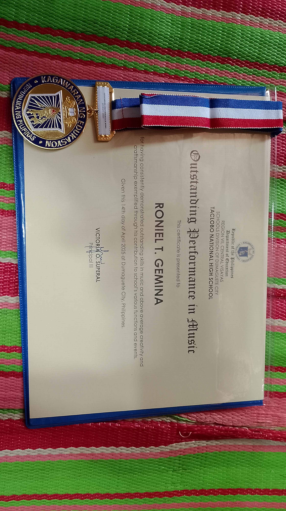> 3rd Place (2nd Runner-up) in Musika para kay Dumagueteña Song Composition Contest in 2025
Guitarist and Music Composer in the team.
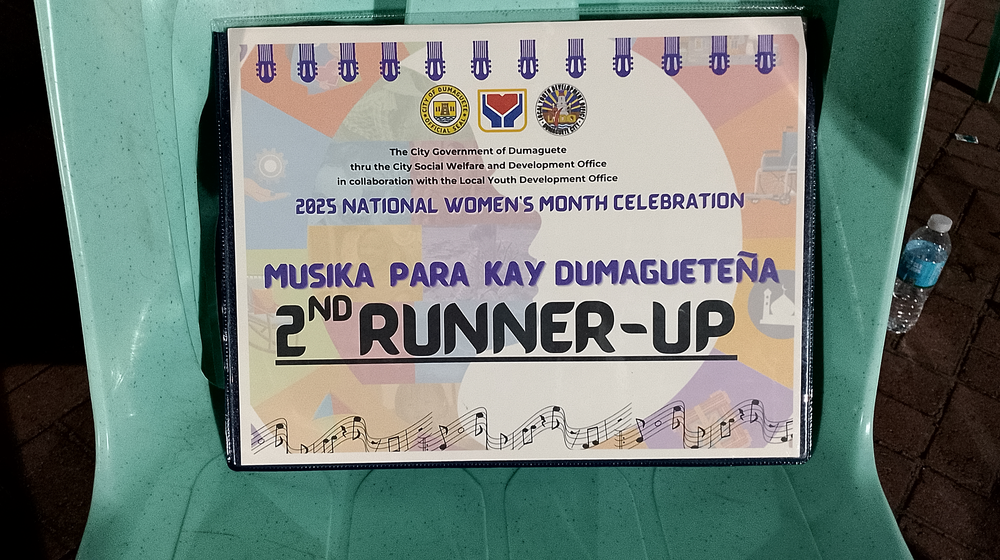> 3rd Place in Pamilya, Una kong Dentista, Jingle and Tiktok Making Contest in 2025
Song Composer in the team.
> 3rd Place in 2024 Inter-High School Balitaw Competition
Guitarist and Song Composer in the team.
Click the photo to watch the video performance.
> 3rd Place in TNHS Intramurals Chess 2023 (Team Category)
> 5th Place in Docathon 2.0: Documentary Filmmaking Competition
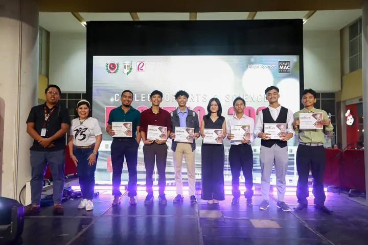> 3rd Place in Science Discovery Writing Contest
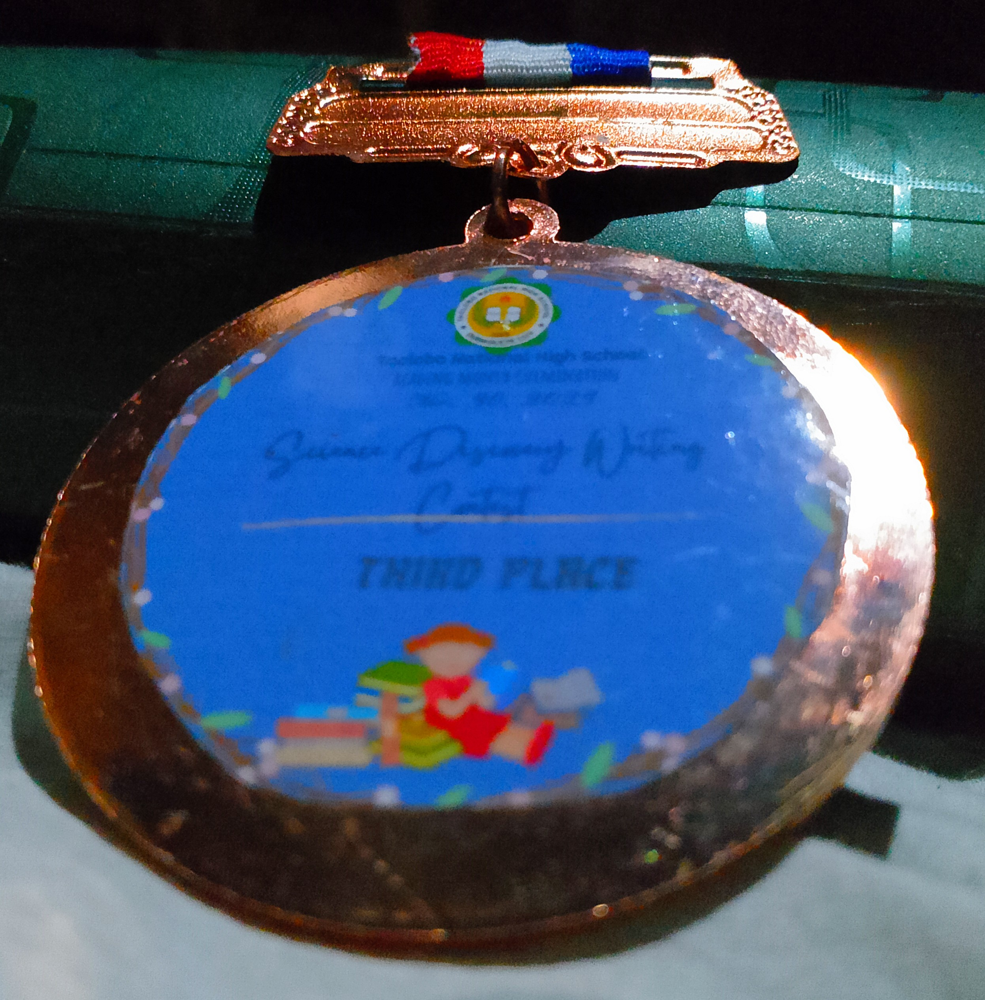 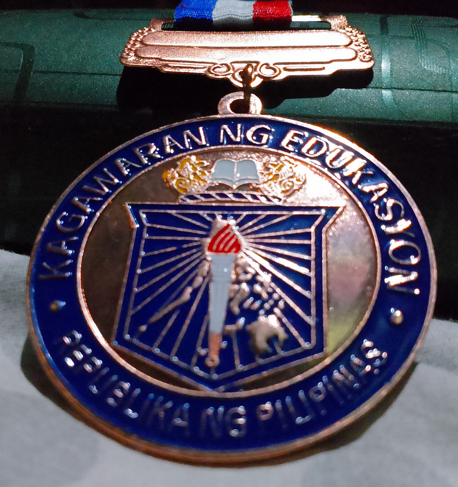> Academic Excellence Award in Grade 11 (Batch 2023-2024): With Honors
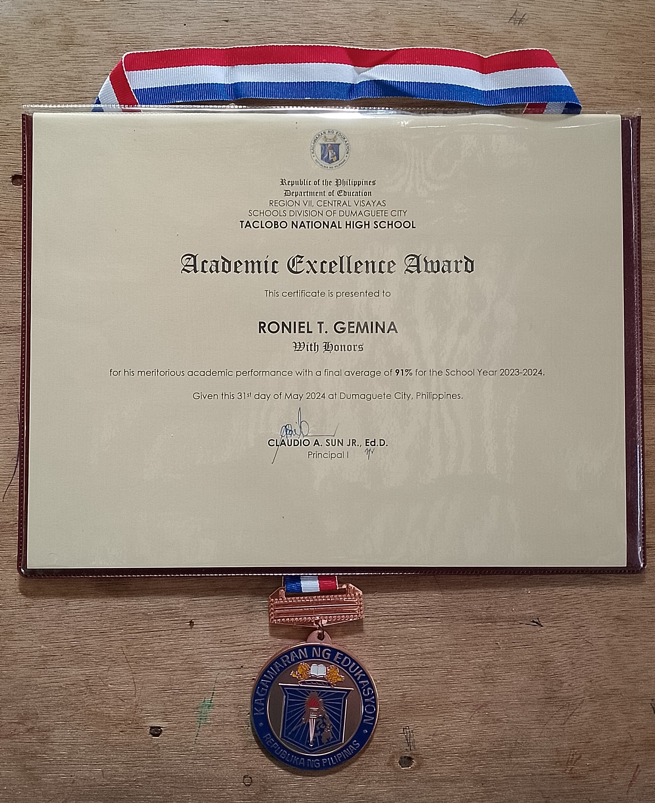